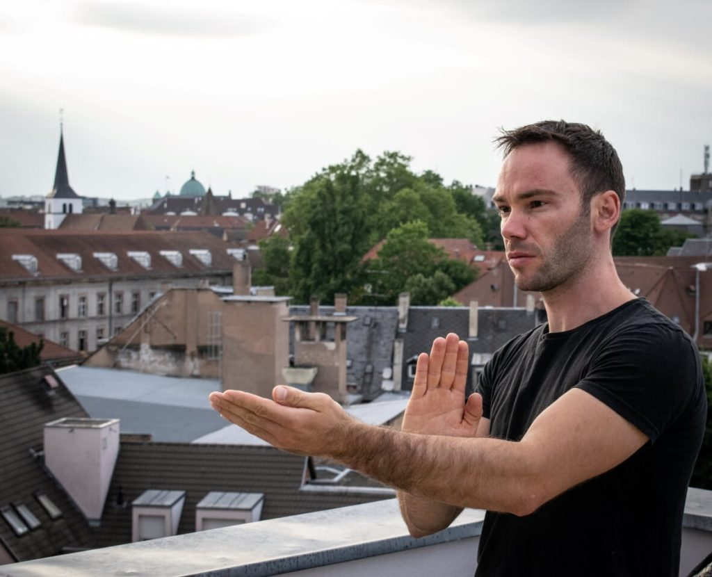

Le professeur
Sifu Arnaud Martin, 5ème générations depuis le maître Ip Man.

Je pratique les arts martiaux depuis plus de 25 ans. J’ai commencé
très tôt par le judo près de mon village natal et en arrivant à
Strasbourg en 2002, j’ai débuté le Wingtsun Kungfu. Je suis arrivé à
la fin du système du Wingtsun Kungfu en 2014 et j’ai depuis cherché à
apporter des innovations au système tout en préservant la
tradition.
Mon objectif est simple, celui de proposer « L’ultime self défense »
par le biais du Wingtsun Kungfu.
Voici les grades qui m’ont été délivré :
- Ceintures noires en Wingtsun Kungfu : 4ème Duan délivré par la Faemc, 2ème Dan délivré par la FFKDA et 2ème Duan délivré par la FWS
- 4ème degré technicien lignée Leung Ting, délivré par Sifu Klaus Flickinger au sein de l’AIWTKF
- Ceinture noire 1er Dan de judo, délivré par la FFJDA
Vous êtes les bienvenus pour un essai gratuit et vous mettre sur le beau chemin du Wingtsun Kungfu qui vous mènera vers la voie du guerrier latent.